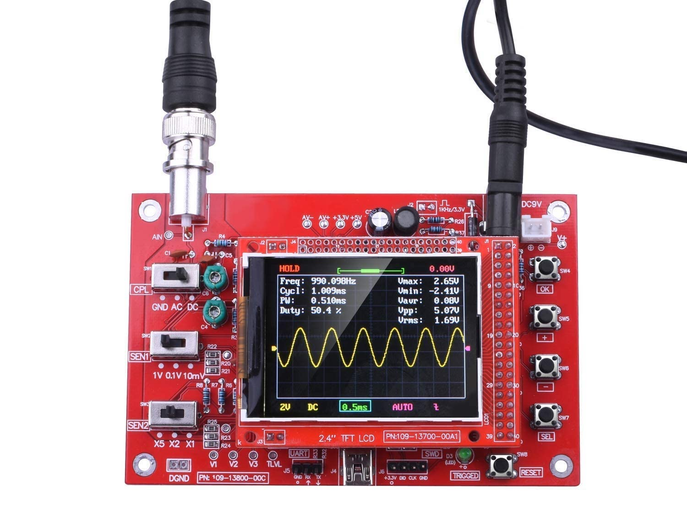
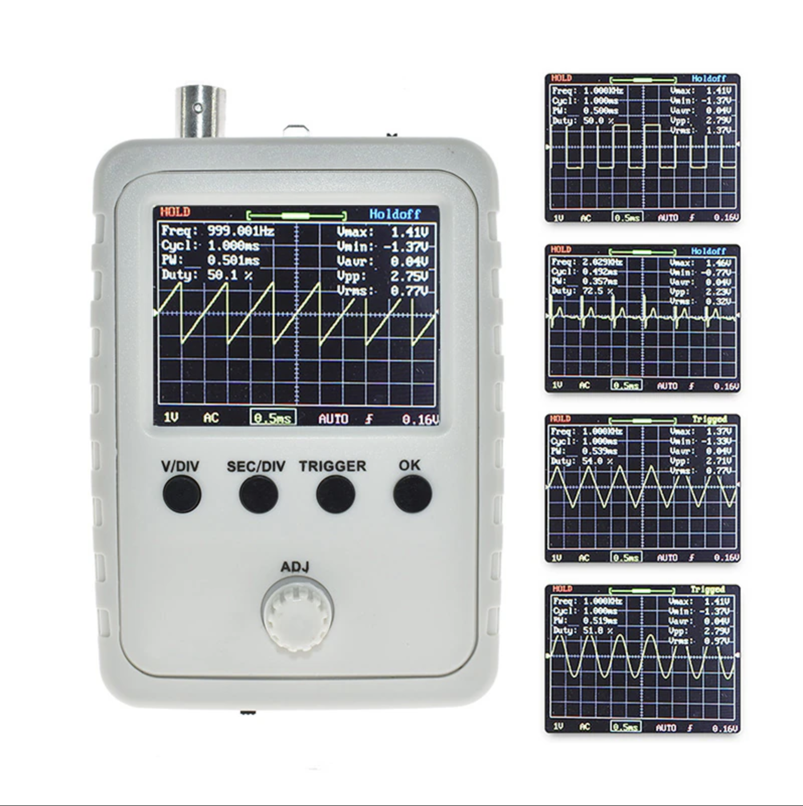
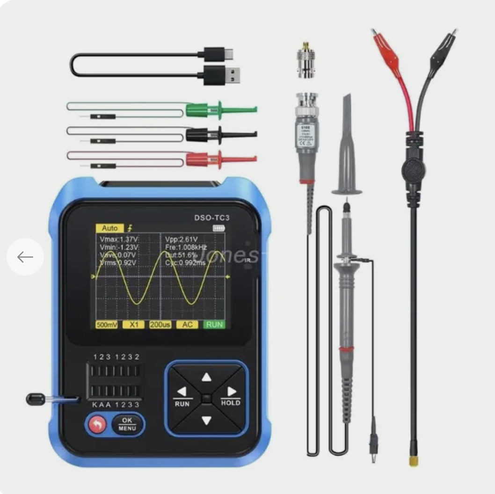
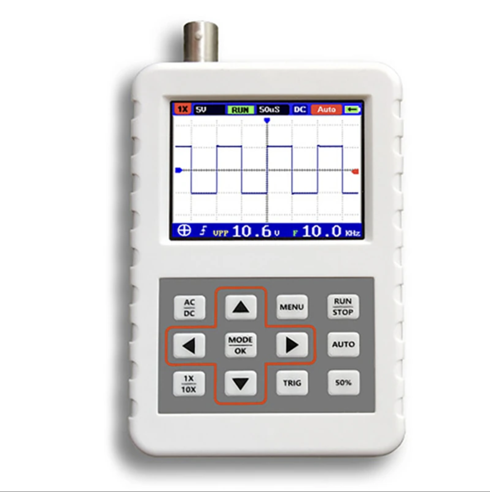
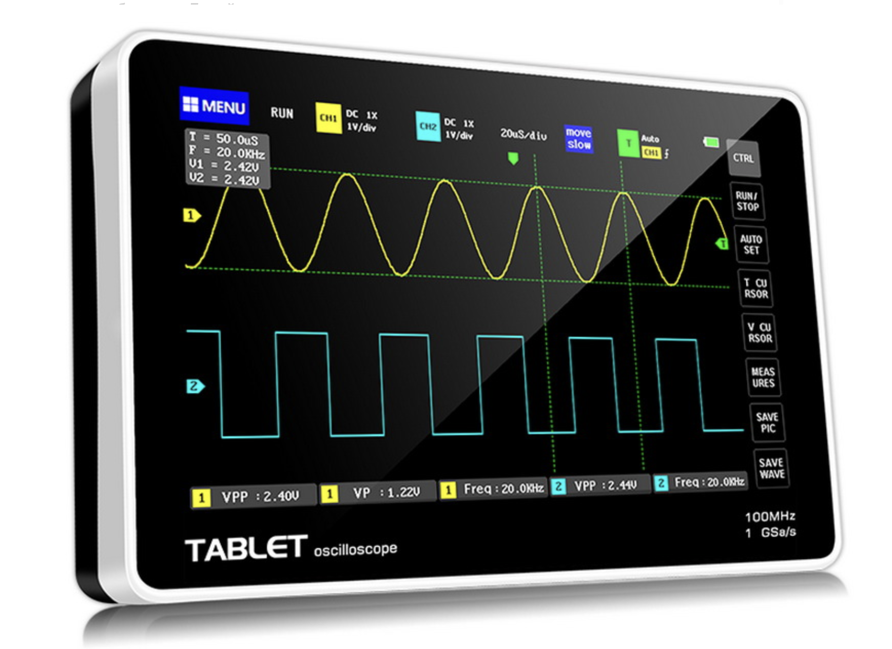
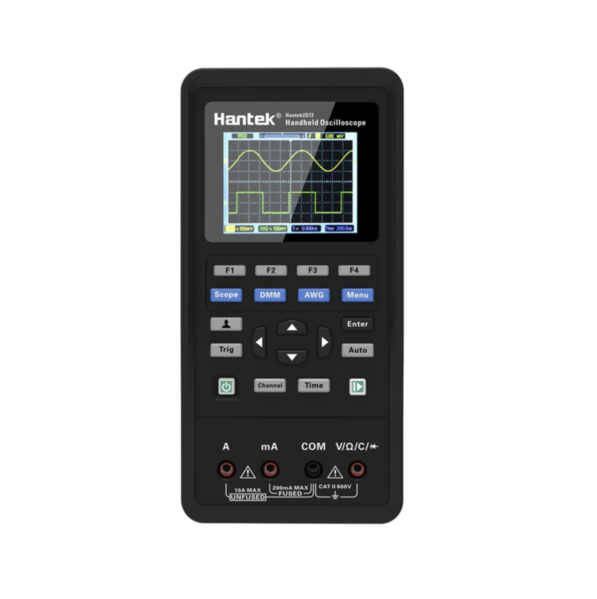
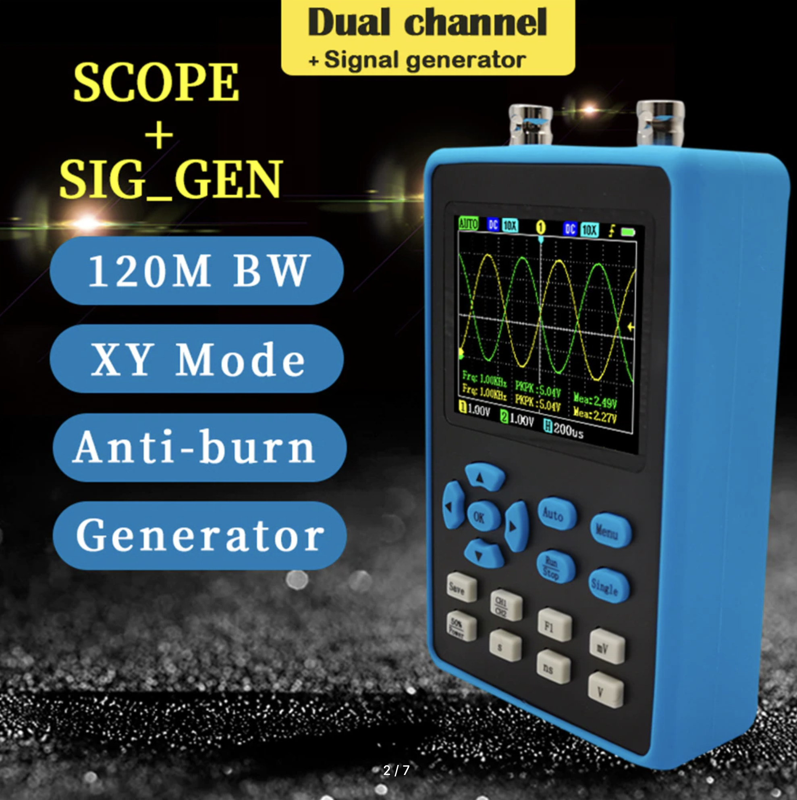
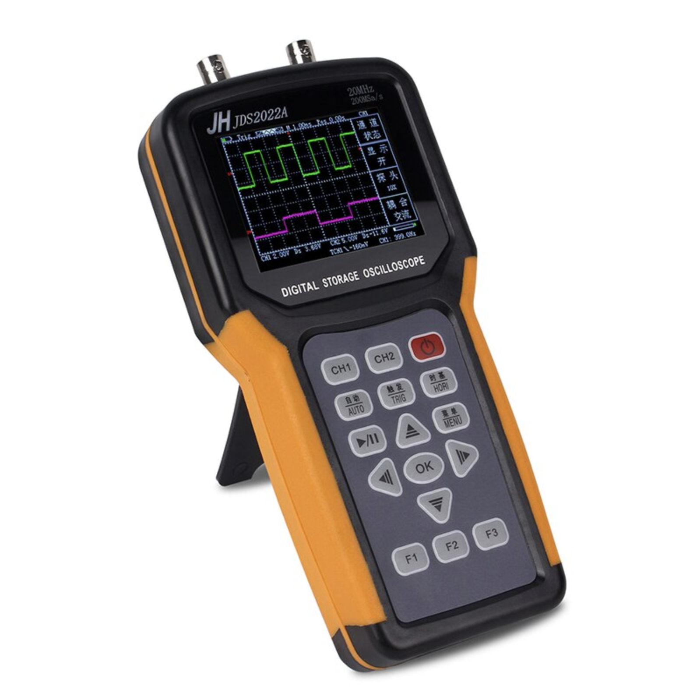

Programming, electronics, lifestyle
Выбор портативного осциллографа в 2023 году
У меня уже есть осцилограф, смотрите в статье – Мой первый осцилограф. Но после переезда в Латвию, я решил не перевозить его, тк он громоздкий и его перевозка будет стоить соразмерно со стоимостью нового с лучшими характеристиками. И я решил купить себе портативный.
Вначале я определил следующие критерии:
- портативный формат
- цена до 15тр
- частота под вопросом, но хотелось бы реально видеть фигуры в районе 20МГц
- немаловажно удобство интерфейса
- в идеале два канала
- также хотелось бы получить прибор без китайской “смекалки” вроде повышения частоты семплирования путем смешения двух каналов одного АЦП
Далее за пару дней я проштудировал много видеообзоров и статей с характеристиками. В целом рынок китайских портативных осцилографов с ценой до 15тр, можно разделить на два сегмента:
- Модели с реальной частотой дискретизации порядка 200 КГц
- И модели с эффективной частотой дискретизации измеряемой в МГц
К первому сегменту я отношу модели DSO138 (1800₽), DSO150 (2000₽), DSO-TC3 (3300₽).
  
В случае необходимости покупки тестора транзисторов, я бы рассмотрел последнюю модель, как комбинированный вариант с возможностью хоть что-то увидеть на координатной оси. Однако, я сразу откинул эти варианты, тк тестор транзисторов у меня уже есть, и в случае покупки отдельного устройства – осцилографа, я хочу, чтобы измеряемая частота дискретизации измерялась в МГц (в идеале порядка 20МГц).
-
FNIRSI DSO PRO (3200₽) (статья с разбором)
- в целом прикольно за свои деньги и можно согласиться на отсутствие второго канала
- не уверен, что мне хватит 5MHz (тем более, что эффективно отображать форму сигнала он сможет где-то до 2MHz)
- очень удобный интерфейс

-
FNIRSY 5012H (4600₽) (статья с разбором)
- уже может работать эффективно с частотами до 30-40MHz (верить в описание 100MHz@500MS/s конечно нельзя)
- чуть посложнее интерфейс

-
FNIRSY 1013D (9600₽) (статья с разбором)
- модель поинтереснее тк есть уже два канала и реально прикольный интерфейс
- размер немного кусается
- верить в заявленные характеристики не приходится 100MHz@1GS/s - на деле работа до 40MHz
- в схеме в отличие от предыдущей модели используется ПЛИС логика, не совсем понятно для чего

-
Hantek 2d42/2d72 (8000/11000₽)
- два канала + генератор - крутая штука
- мультиметр – лишняя часть
- интерфейс жутко стремный
- во всех обзорах, что смотрю, дико глючная прошивка с кучей ошибок

-
DSO 2512G (5900₽)
- что-то вроде FNIRSY 5012H, но на два канала + есть генератор сигналов
- интерфейс относительно сложный, я бы сказал - среднячок
- используется куча хаков, в итоге по факту в одноканальном режиме может измерять до 40МГц

-
JH JDS2022A (9600₽)
- кажется немного громоздким
- также сложный интерфейс
- из характеристик не кажется, что производитель завышает характеристики

Итог
Взял DSO 2512G от компании Zeeweii. Тк по характеристикам он подобен моделям Hantek и JH, а интерфейс проще и цена меньше.
Долго думал между FNIRSY 5012H и DSO 2512G, но при разнице 1300 рублей решил, что будет круто иметь второй канал и генератор сигналов.